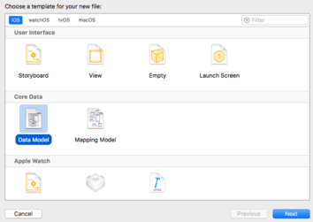
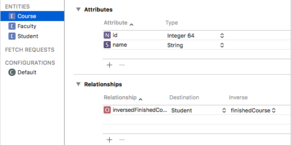
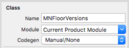

Basic of Core Data Framework
This blog talks about the basic of core data. Mainly focused on how to use core data to save your object into the database. It will cover some problem I met when I was using core data. More advanced usage will be covered in future posts.
Data Model File
First before using core data service, we need to have its core, the .xcdatamodeId file inside directory. When you select use core data before creating the project, this file is auto created for you. If not, you need to create that file yourself.

After you created your data model, click and open it, you can see a plus sign on the bottom. Click to add an entity.
Here is a brief explanation on what these things is. For example, entity attributes, relationships, etc. It is easier for you to understand if you have some database knowledge. It is basically grab the object in your model and translates each property and instance into the database column and tuple.
Entity, Attributes, Relationships
An entity is a table in database. It is the class object in your code. Consider the following object
1 | class Student { |
Here, Student, Course, Faculty is the entity.
For Course object, id, name is its attribute.
For relationships, take a look at Student class, it has four properties, the finishedCourse is a Course array, and facility is Faculty object. Yes. if you have a property, its type is an object, then this property does not go into attribute filed. It should be a relationship. If it contains an array of object, it is a One-Many object. Otherwise, it will most likely to be a One~One object.
Inverse of relationship
If you set the relationship like what you do in Student class, it is not acceptable in core-data. The reason is for each relationship, we must have its corresponding inverse relationship. So this is what we usually do.
For example, we can see that the above student class has a faculty class, so we create a one to one relationship under entity Student called faculty. Select its destination to Faculty and leave inverse empty for now. Now switch to Faculty entity, go to the relationship, create a new relationship, set its destination back to Student, and select its inverse to the one we previously created faculty. Now go back to student entity, and you can see an inverse relationship has been linked automatically to the one you created in faculty entity

At last, make sure you select the relationship type in the right hand side panel. In the example, the faulty is To one, the finishedCourse is To many.
Export in class object
After we setup the Data Model file, it means the data base used to store the model has been setup properly. Now we need to create the object that represent the model in code. Previously, I use some sample codes to made an example, about the relationship on student, course, and faculty. That is just for clarification. In real world, you don’t create these class yourself. If you decide the class is used in core data, then the class itself should be created from core data, because they need to be subclass of NSManagedObject
If you don’t export the file manually, it will auto generate files for you but you will miss a lot of customization possibilities.
Here is how we do if we want to manually export those classes. First, select each entity and give it an object name, by default, it is the same to the entity. Under the class - name, you can see Module and Codegen, select Module as Current Product Module and Codegen as Manual/None.
Now select the menu Editor -> Create NSManagedObject Subclass, you can see an export guide, follow the guide and you will have the class definition file.
After that, you should be able to compile your project. If you see an error about redeclaring the object, you need to go back and see the Module and Codegen field of each entity you exported. Because by default, it will automatically generate the code file.
Create, Update, Remove Instance
Now we have the basic structure setup. All we need to know is how to create new instance, update them, save to database.
Init Data Base
Before you do anything, the first thing is to init your core data database. If you take a look at the official tutorial, they have detail explanation on how to init the database. Below is the code I am using.
1 | // TODO: If terminate during app startup, make this async and if this is async, load database later after it finished |
NOTE: When init database, it usually happens in the app launch time. You should run huge tasks because if the app takes too much time on start up, it will be terminated by the OS.
Currently in my above code, I am running everything sync. This should not happen. It should run async. The reason I make it sync is because when app launch, I load everything in database into the memory. So if the setup database is async, then when I load from database, it is possible that the init process has not finished yet. In the future, I may check if init finished, before loading from database.
Basic Operations
Create an entity:
1 | public func createItemToDatabase(entityName: String) -> NSManagedObject? { |
Load all the instance into memory:
1 | public func loadFromDatabase(entityName: String) -> [MNManagedObject]? { |
Clear the database:
1 | public func clearDatabase(entityName: String) { |
When you update the item, just update the NSManagedObject you get from the database as normal. The change is not saved into database until you call the following.
1 | managedObjectContext.save() |
BUG? Questions? Problems?
Below is any additional problems that I have when I use Core Data.
Insert Failed (casting?)
If you ever had a problem when you create the instance and casting it from NSManagedObject to custom subclass and it returns nil, then you may want to check the following.
First make sure that you have on select Current Product Module under Class - Module.

if that doesn’t help, make sure you don’t have @Objc(className) before the class definition
Take a look at this answer for additional helps